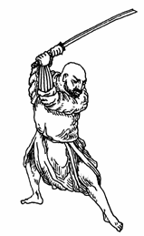

ДАТЬ ПИЗДЫ

Когда мои коллеги по журналу попросили меня написать текст во второй номер, я пригорюнился. "Ладно," - нехотя пообещал я им. А сам задумался - на хуя? Ведь, честно говоря, мы создали наш журнал, чтобы писать правду. А правда заключается в том, что мне совсем не хочется писать тексты. Мне просто хочется дать всем пизды.
Когда мой друг Дельфин в первом номере нашего журнала заявил, что ему противны глянцевые журналы и прочие СМИ, потому что у них три главные цели - деньги, деньги и деньги - на него обрушился шквал огня. У меня же было такое чувство, будто я отсиживаюсь в окопе, как последний подлец, пока он один бьется в рукопашном бою. Ничего, дал я себе слово. Во втором номере то же что-нибудь эдакое напишу. Но, как выясняется, ничего "эдакого" написать я не могу. Потому что мне нечего писать. Потому что мне просто хочется дать всем пизды.
Когда говорят - текст, слово, стиль - я не понимаю, что это значит. Какой, на хуй, стиль? К чему вся эта витиеватая, будто изо всех сил старающаяся прикрыть жопу на бегу, писанина? Ведь куда лучше, чем тратить попусту время, пойти и навалять кому-нибудь пиздюлей. И почему все журналисты без конца апсирают друг друга в печати? Вместо того, чтобы просто встретиться и надавать друг другу дрозда. Если тебе не нравится, что я пишу, наберись смелости и скажи мне это в лицо. Только знай - я въябу по самые помидорки. Я атмудохаю тебя так, что мало не покажется. Я размозжу тебе башку так, что твои мозги долетят аж до макушки Останкинской башни, приятель!
Короче, мне хочется дать всем пизды. Да что там хочется! Сказать по правде, я часто и даю пизды - когда нахожусь в хорошем настроении. Я атпиздил почти всех своих друзей. При каждом удобном случае я стараюсь папиздиться и с кем-нибудь на улице. Но этого мало. И снова обещаю себе: "Когда-нибудь, ребята, я атпижжу вас всех". Журналистов и пацифистов, артистов и фашистов, программистов и палиндромистов. Бля буду, всех!
Кто я такой? Мне 28 лет, но я седой и толстый, с трудом дышу. У меня перебит нос и практически вышиблены мозги. Десять лет я занимался боксом и карате, лежал в психушке, сидел под следствием. А однажды ошалевший пацан на волне щенячьей радости пырнул меня в бок ножом. И еще, было дело, я отсосал. Нет не хуй, но соленый ствол АКМ оказался в моем рту. Но я выжил. Я давно мертв душой и рассудком, но живу. И спрашиваю себя - зачем? Так сложно найти ответ, но знаю одно - живу для того, чтобы пока я жив, пока есть еще порох в пороховницах, пока трубит трубач Гаврош и бьется сердце, давать пизды. Что я и делаю.
Меня тошнит от всех этих заскорузлых замухрышек - наших интеллигентов и интеллектуалов. Я говорю - разбей очки яврею, схвати волосатого за волосы и садани его башкой об стену, вырви у бородача из рук книгу и разгрызи ее на куски, а потом выплюнь их ему в харю. Покажи ему жопу. Запихни свой жирный кляп ему в рот. Потешь его, рассмеши, а потом задуши и распотроши. Разорви ему рот до ушей и выдерни язык. Засунь, сам знаешь куда. Короче, уббей врага - дурака, мудака и чудака. Замочи его в унитазе. Ну, а если не хочешь пачкаться в их протухшей синюшной крови - просто атпизди. Дай пизды, давай пизды, крепко давай пызды.
Я хочу обратиться к тебе, читатель нашего журнала - расти истинным борцом. Занимайся спортом, ходи в качалку и наращивай мускулы. И пиздись. Пиздись от рассвета до заката и от заката до рассвета. Пиздись так, чтобы однажды, когда придет твой смертный час, не обоссаться со стыда. Чтобы сходя в могилу, не пришлось прятать глаза от детей и внуков. Чтобы честно сказать себе - я прожил жизнь не зря. Мне не было мучительно больно и обидно за бесцельно прожитые годы. Всю свою жизнь, от рассвета до заката и от заката до рассвета, я давал пизды.
И еще, мои юные читатели - если кому-то из вас не понравится, то что я написал, и он захочет со мной папиздиться - присылайте мне письма на наш адрес pizdy@pg.com. Я обязательно отвечу. Я обязательно встречусь с каждым из вас в честном бою и папижжусь один на один. И уж будьте уверены - атпижжу от всей души. Дам самой настоящей, русской, вкусной, крепкой пизды.
22 мухаррама 1420 года
Редактор ПГ амир Ильяс Фалькенштейн
|